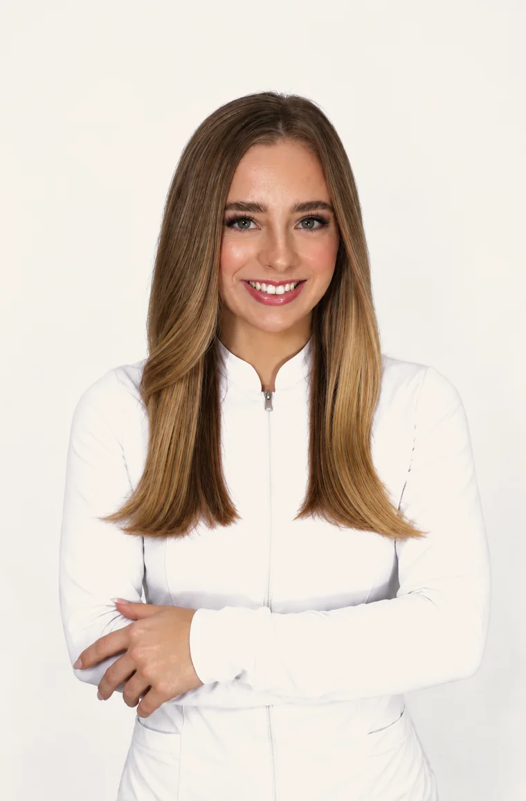

Before
Before After
AfterNano BrowsMapped, shaped and healed
Bee Cave · Lakeway · Austin, Texas
Medical aesthetic tattooing designed to enhance your natural features with refined, personalized results.

At AMAesthetics, beauty is personal. Our approach combines advanced cosmetic tattoo techniques, detailed facial design, premium pigments, and years of hands-on experience to create results that feel polished, balanced, and uniquely yours.
From brows, lips, and eyeliner to cleft lip reconstruction, areola tattooing, scar and stretch mark camouflage, laser tattoo removal, permanent makeup removal, and piercing, every service begins with a personalized consultation and a focus on precision, comfort, and long-term results.
Featured Services
Pricing is confirmed after we look at your skin, your previous work, and the result you want, because the same procedure is not the same work on every face.
Also available: professional piercing, and touch-up or correction of permanent makeup performed elsewhere. If you are not sure which treatment you need, book the consultation first, it is what defines everything else.
Before & After
Fresh pigment always looks stronger. What matters is how the area reads weeks later, once the color has settled and the skin has done its part.
BeforeAfterLip Blush,
eight weeks healed
Eyeliner,
invisible lash line
3D Areola,
after reconstruction
Scar camouflage,
fully healed tissue
Drag to see more
Signature Packages
Choose from permanent makeup, correction, removal, and restorative packages designed to make your treatment plan simple and provide preferred package pricing.
Brows + Lips + Eyes
The ultimate permanent makeup package designed to enhance your most defining features in one appointment.
Wake up with beautifully defined brows, naturally enhanced lips, and effortlessly defined eyes, all customized to complement your features.
Permanent Makeup Correction Plan
Designed for clients with old, uneven, discolored, oversaturated, or poorly shaped permanent makeup who want a fresh start.
The number of sessions needed varies depending on pigment color, depth, saturation, previous treatments, and individual response. Additional sessions may be recommended before new permanent makeup can be performed.
Tummy Tuck Scar + Stretch Mark
Restore confidence in your skin with a personalized treatment plan designed to improve the appearance of healed tummy tuck scars and abdominal stretch marks.
Treatment area and eligibility are evaluated during consultation. Additional sessions may be recommended based on individual healing and treatment goals.
Breast Surgery Scar + Areola
A specialized restorative package designed for clients with fully healed breast surgery scars who want to improve their appearance and restore natural-looking detail.
Treatment eligibility depends on healing, scar condition, skin tone, and treatment area. A consultation is required before treatment.
We will help you choose the best treatment based on your skin, previous work, and desired results.
Book a ConsultationResults vary. Scar and stretch mark treatments require fully healed tissue. Additional sessions may be recommended.
Meet the Artists

With 12 years of experience and more than 10,000 treatments performed, Agata Soldato is known for precision, natural-looking results, and advanced corrective work.
Her expertise includes Nano Brows, Eyeliner Tattoo, PMU Corrections, Laser Removal, Cleft Lip Reconstruction, and Areola Tattooing. Throughout her career she has worked with a diverse clientele, including well-known celebrities and public figures, while maintaining the same personalized attention and discretion for every client.
She is especially experienced in correcting previous permanent makeup, including challenging shapes, colors, asymmetry, and unwanted results.

Lanie Stein is known for her attention to detail, patience, and ability to truly listen to her clients. She takes the time to understand each client's goals, building genuine, trusting relationships and creating personalized results.
With 8 years of experience and extensive advanced training, Lanie specializes in permanent makeup and restorative techniques. She has completed multiple specialized trainings and is now also a trainer in Scar Camouflage and Stretch Mark Camouflage, sharing her expertise with other artists.
Her thoughtful approach, technical precision, and commitment to her clients make every treatment feel personal and carefully designed.
Our Process
We listen to your goals, evaluate your needs, and recommend the best approach.
Your treatment is customized specifically for you.
Your service is performed with precision, attention to detail, and care.
You will receive an aftercare kit with everything you need for proper healing, along with simple instructions and follow-up recommendations.
PMU Training & Private Mentorship
Train with Master Agata Soldato through a personalized education experience designed for artists who want more than a basic permanent makeup class. Students can choose private one-on-one in-person mentorship or flexible online education.
Private mentorship provides focused, hands-on training directly with Master Agata. The program can be customized around the student's selected technique and experience level, with individual guidance throughout the learning process.
The online program combines permanent makeup education with the business knowledge needed to build and grow a professional beauty career.
More than a PMU course. Agata's mentorship is designed to help students understand both the artistry and the business behind permanent makeup, developing technical confidence while learning how to attract clients, deliver a professional experience, price services, market effectively, and build a sustainable business.
Payment Plans & Financing
Agata Medical Aesthetics offers payment plan options to help make services and multi-treatment plans more accessible. Ask about available financing during your consultation and review eligibility, terms, and payment options before scheduling.
Financed services may be subject to separate cancellation, refund, rescheduling, and provider terms. Clients should review and agree to the applicable financing agreement and Agata Medical Aesthetics policies before completing a financed purchase. Financing approval and terms are determined by the financing provider.
Explore Payment OptionsFrequently Asked Questions
Consultation & Booking
Whether you already know which service you want or need help deciding, our team will guide you through the options and create a personalized plan.